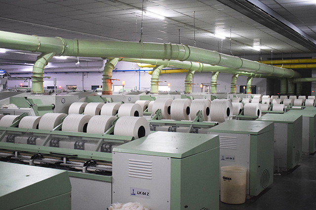

RAW MATERIAL MIXING:
Mixing is the first and important process in the spinning unit. When cotton is received from different ginners, it is better to maintain the percentage of cotton from different ginner's through the lot, even though the type of cotton is same. There are a number of Fiber properties which can influence the quality of the yarn. A textile Fiber is a peculiar object. Fiber properties vary very much within the lot. Our Mixing Godown can accomodate(stock) upto 10000 BALES.BLOW ROOM:
Blow room is the process which takes care of opening, cleaning and blending different Fibers used in the mixing. Company's Blow room consist of following machines-- Bale Plucker LA 23/S,
- Uniclean LB7/4R ,
- Unimix LB9/2,Supremoclean LB10/2 ,
- CITY TEX FOREIGN FIBRE DETECTOR ,
- I Focus FOR WHITE PP,
- I Focus poly FOR COLOURED,
- ARGUS ELGI METAL AND FIRE DETECTION UNIT
- UV Light Chamber

CARDING PROCESS - LC363:
The purpose of Carding Process is to open the flocks into individual Fibers, Cleaning or elimination of impurities, Reduction of neps, Elimination of dust, Elimination of short Fibers, Fiber blending, Fiber orientation or alignment and Sliver formation.DRAW FRAME - PRECOMB - LD2:
Drawing is the final process of quality improvement in the spinning mill and quality of draw frame sliver determines the final yarn quality. Draw Frame process includes Equalizing, Parallelizing, Blending and Dust removal.

LAPFORMER - LH15:
The Lapformer has further more,the task of forming the interfacing or lap,which is employed to feed the combing machine.COMBER PROCESS - (ComberLK64Z),(ComberLK69):
The combing process is normally used to produce smoother, finer, stronger and more uniform yarns. The carded materials (sliver) contain certain amount of short fibres, neps, fine kitty and leaf particles. Short fibres are a hindrance to spinning of finer counts .Short fibres below a certain pre-determined length can be easily separated out by using comber. Therefore, combing is commonly confined to high grade, long staple natural fibers.
FINISHER DRAWFRAME - (LDAZ),(LDF3):
Main task of drawframe is improving evenness and yarn strength with equalizing,parallelizing,blending and dust removal.SPEED FRAME - (LF4200A),(LF4280A):
Roving bobbin is the ideal package form for supply of material to the ring spinning frame. It is very convenient for transport and storing. Speed Frame includes various processes like Creeling, Drafting, Twisting, Winding, Building and Doffing.
RING FRAME - LR9/AXL:
The ring spinning will continue to be the most widely used form of spinning machine in the near future, because ring spinning still offers the greatest flexibility in application and supplies yarns of a quality that cannot be equaled by the new technologies owing to technological reasons.AUTO CONER (MURATEC PROCESS CONER QPRO-2):
Winding is the process which results in producing a good package of long length and fault free yarn. Most of the spinning mills use automatic winding machines. Quality of yarn and package and winding machine production are improving day by day. The requirements of package quality and yarn quality are also very high for the present knitters and weavers. Company has LinkConer with MURATEC PROCESS CONER QPRO-2. YARN CLEARER LOEPFE ZENITH PLUS and LOEPFE PLUS WHITE PP DETECTION on all.